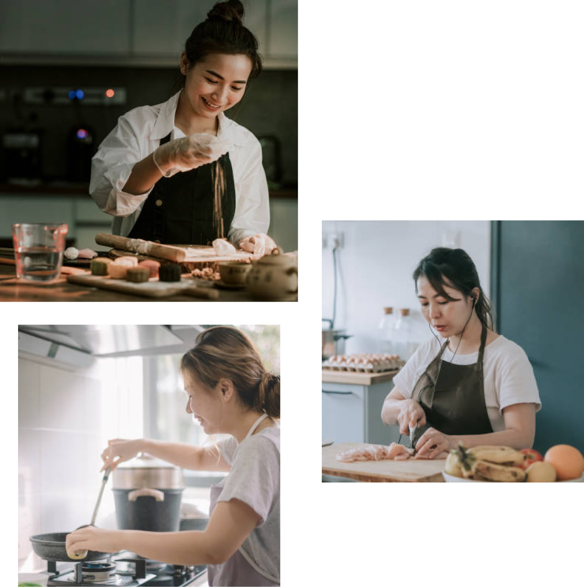

<main class="flex-fill">
  <section>
    <div class="container">
      <div class="row">
        <aside class="col-md-2 align-self-start mb-md-0 mb-40">
          <ul class="navbar-nav justify-content-center flex-md-column flex-row gap-20 mb-0">
            <li class="nav-item">
              <a class="nav-link" href="about.html">關於食堂</a>
            </li>
            <li class="nav-item">
              <a class="nav-link active" href="about-chief.html">料理師</a>
            </li>
            <li class="nav-item">
              <a class="nav-link" href="about-restaurant.html">餐廳介紹</a>
            </li>
          </ul>
        </aside>
        <div class="col-md-4 mb-md-0 mb-20">
          <h1 class="section__title fs-md-1 fs-2 pb-20 mb-0 text-md-start text-center">
            金睿彬 <span class="h3 text-gray">김예빈</span>
            <hr class="my-10 mx-md-0 mx-auto opacity-100 border-0">
          </h1>
          <p>
            人稱金姨母。雖然姓金，但絕對是土生土長台灣人。因為熱愛 Kpop 所以開始喜歡韓國，隨著深入了解，就更想去前往當地體驗生活。
          </p>
          <p>
            在台灣畢業工作一段時間後，開始規劃前往韓國，趁著讀語學堂與 Working Holiday 期間，遊歷韓國大大小小的市場、餐廳、景點等。回台灣後對韓國食物念念不忘之下，創立了《食堂》分享食譜。
          </p>
          <p>
            不僅教做菜，更教人懂菜，由飲食文化談起，從備料重點、製作技巧、延伸應用到保存期限等起源與知識。預期大家會在家庭式廚房做出我們的料理，簡化、調整到讓人可以輕鬆跟著我們 Step by Step，做出不平凡的一日三餐。
          </p>
          <p>
            近年還開設了食堂私廚餐桌，原本只為了招待朋友來吃難以自己處理的料理，現在將廚房公開預約，將線上網友變成線下朋友。
          </p>
        </div>
        <div class="col-md-6">
          
        </div>
      </div>
    </div>
  </section>
</main>
